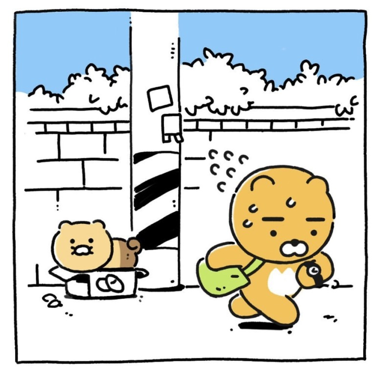

춘식
"안냥. 나는 라이언과 동거중인 춘식이다냥! 고구마 너무 좋아 🍠"
▼라이언과 첫만남▼



- 길거리 출신 성별 미상의 고양이로 라이언의 반려묘.
- 춘식이의 생일은 춘식이가 정확히 기억하지 못하여 라이언이 춘식이를 만난 2020년 7월 21일 냥줍데이를 기념하고 있다.
- 반려동물이라고는 하지만 라이언을 비롯한 카카오프렌즈들과 동등한 인격체로 취급되고 있으며 사람처럼 행동하고 말을 할 수 있다.
- 귀가 둥글어서 곰으로 오해받을 때도 있다.
춘식아 너는 정말 귀엽고 깜찍한 곰이야
인스타툰
- ▼춘식툰 시리즈▼


춘식과 라이언의 첫만남부터 지금까지의 일을 카카오프렌즈 스튜디오 공식 인스타그램에 연재한 인스타툰.
지금까지 총 7편이 연재되었으며, 이 중 춘식이 데뷔 3주년을 맞이해 '춘식이는 집순이', '춘식이는 프렌즈', 그리고 춘식이와 라이언의 첫 만남 에피소드들도 '라이언 집사일기'라는 이름으로 카카오페이지를 통해 '춘식툰'이라는 이름으로 공개 중이다.
인스타툰 모음
- 춘식이는 집순이
- 춘식이는 고양이
- 춘식이는 프렌즈
- 춘식이는 최고야
- 춘식이 Q&A
- 춘식이는 프렌즈 2
- 일해라춘!
애니메이션
-

- 춘식이 데뷔 3주년 기념으로 제작한 애니메이션으로 춘식이가 라이언을 만나기 전 행복을 찾아가는 이야기이다.
- 채널 소개로 "내가 가장 행복을 느끼는 곳은 어디일까? 어딘가에 있을지 모르는 따뜻한 집을 찾아 떠난 춘식이의 성장 스토리"로 되어 있으며, 출연란에 보면 애니메이션의 공식 출연자는 춘식이 주연 한명 뿐이다.
- 각 에피소드는 방문하는 장소 기준으로 나눠져 있으며, 춘식이는 숲, 시골집, 장터, 바다, 도시 순으로 방문한다.
- 도시 장면에서 라이언과 춘식이는 2층 단독주택에 살고 있으며, 배경으로 남산서울타워가 나와 카카오프렌즈 세계관이 서울을 배경으로 삼고 있음을 보여준다.
- 팬미팅에서 공개된 버전을 기준으로 약 30분의 런닝타임을 가지고 있으며, 라이언을 만나고 행복하게 살아가고 있습니다로 끝이 난다.
카카오프렌즈

KAKAO FREINDS
| 제이지 |
프로도 |
제목3 |
| 내용1 |
내용2 |
내용3 |